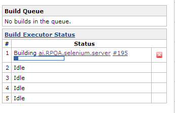
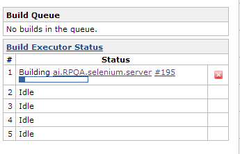

QA: Quality Assurance

QA
- Specs
- Tests
- Reports
QA Automation

We Will Cover
- What is continuous integration (CI)
- How does it make our lives better here at Ai
- Why Selenium and Fabric?
- How we use it here
What is continuous integration

Our definition: The parctice of merging your code base several times a day with the intent to be used in combination with automated unit tests.

How to implement CI
In comes Jenkins to the rescue
- What is jenkins
- Jenkins is an award-winning application that monitors executions of repeated jobs, such as building a software project or jobs run by cron.
What Benefit does CI have?
Saves Time
- which saves you!

Keeps Development Running Smooth
and on target
 

Push Button Deployment!
Soon to come not yet

Push button code promotion
Deploys

Ai Automated QA

Ai Automated QA
- Scripting
- Link Finding
- So much more
Scripting
Selenium and Fabric


Scripting
Selenium
Selenium with webdriver
KNG Store locations test
from selenium import webdriver
from selenium.webdriver.common.by import By
from selenium.webdriver.support.ui import Select
from selenium.common.exceptions import NoSuchElementException
import unittest, time, re
import xlrd
import pprint
from StoreLookup import StoreLookUp
class Test (unittest.TestCase):
def setUp(self):
self.driver = webdriver.Firefox()
self.driver.implicitly_wait(4)
self.base_url = "http://kng.qa.aistg.com/"
self.verificationErrors = []
self.accept_next_alert = True
def test_(self):
store_id = '0008'
driver = self.driver
lookup = StoreLookUp()
values = lookup.getValues()
ips = values['ips']
pprint.pprint(values['store_data'])
for store_id,options in values['store_data'].items():
#ipaddr = ips[2]
#driver.get(self.base_url + "/?MY_IP=" + ipaddr)
print ('opening url %s ' %store_id)
driver.get(self.base_url + "/location/" + store_id)
time.sleep(2)
if options['Open 24hrs'] == 'Yes':
try: self.assertTrue(self.is_element_present(By.CSS_SELECTOR, "span.open-24hrs"))
except AssertionError as e: self.verificationErrors.append(str(e))
if options['Pay at the Pump'] == u'Yes':
try: self.assertTrue(self.is_element_present(By.CSS_SELECTOR, "span.pay-at-the-pump"))
except AssertionError as e: self.verificationErrors.append(str(e))
if options['Redbox'] == u'Yes':
try: self.assertTrue(self.is_element_present(By.CSS_SELECTOR, "span.redbox"))
except AssertionError as e: self.verificationErrors.append(str(e))
if options['Car Wash'] == u'Yes':
try: self.assertTrue(self.is_element_present(By.CSS_SELECTOR, "span.car-wash"))
except AssertionError as e: self.verificationErrors.append(str(e))
if options['E85'] == u'Yes':
try: self.assertTrue(self.is_element_present(By.CSS_SELECTOR, "span.e85"))
except AssertionError as e: self.verificationErrors.append(str(e))
if options['Fresh Food'] == u'Yes':
try: self.assertTrue(self.is_element_present(By.CSS_SELECTOR, "span.fresh-food"))
except AssertionError as e: self.verificationErrors.append(str(e))
if options['Pizza'] == u'Yes':
try: self.assertTrue(self.is_element_present(By.CSS_SELECTOR, "span.pizza"))
except AssertionError as e: self.verificationErrors.append(str(e))
if options['Semi-Truck Fuel Island'] == u'Yes':
try: self.assertTrue(self.is_element_present(By.CSS_SELECTOR, "span.semi-truck-fuel-island"))
except AssertionError as e: self.verificationErrors.append(str(e))
if options['Diesel'] == u'Yes':
try: self.assertTrue(self.is_element_present(By.CSS_SELECTOR, "span.diesel"))
except AssertionError as e: self.verificationErrors.append(str(e))
if options["F'Real"] == u'Yes':
try: self.assertTrue(self.is_element_present(By.CSS_SELECTOR, "span.f-real"))
except AssertionError as e: self.verificationErrors.append(str(e))
#need to add freal and maybe resturant
def is_element_present(self, how, what):
try: self.driver.find_element(by=how, value=what)
except NoSuchElementException, e: return False
return True
def is_alert_present(self):
try: self.driver.switch_to_alert()
except NoAlertPresentException, e: return False
return True
def close_alert_and_get_its_text(self):
try:
alert = self.driver.switch_to_alert()
alert_text = alert.text
if self.accept_next_alert:
alert.accept()
else:
alert.dismiss()
return alert_text
finally: self.accept_next_alert = True
def tearDown(self):
self.driver.quit()
self.assertEqual([], self.verificationErrors)
if __name__ == "__main__":
unittest.main()
KNG Store locations test
from selenium import webdriver
from selenium.webdriver.common.by import By
from selenium.webdriver.support.ui import Select
from selenium.common.exceptions import NoSuchElementException
import unittest, time, re
import xlrd
import pprint
from StoreLookup import StoreLookUp
class Test (unittest.TestCase):
def setUp(self):
self.driver = webdriver.Firefox()
self.driver.implicitly_wait(4)
self.base_url = "http://kng.qa.aistg.com/"
self.verificationErrors = []
self.accept_next_alert = True
def test_(self):
store_id = '0008'
driver = self.driver
lookup = StoreLookUp()
values = lookup.getValues()
ips = values['ips']
pprint.pprint(values['store_data'])
for store_id,options in values['store_data'].items():
#ipaddr = ips[2]
#driver.get(self.base_url + "/?MY_IP=" + ipaddr)
print ('opening url %s ' %store_id)
driver.get(self.base_url + "/location/" + store_id)
time.sleep(2)
if options['Open 24hrs'] == 'Yes':
try: self.assertTrue(self.is_element_present(By.CSS_SELECTOR, "span.open-24hrs"))
except AssertionError as e: self.verificationErrors.append(str(e))
if options['Pay at the Pump'] == u'Yes':
try: self.assertTrue(self.is_element_present(By.CSS_SELECTOR, "span.pay-at-the-pump"))
except AssertionError as e: self.verificationErrors.append(str(e))
if options['Redbox'] == u'Yes':
try: self.assertTrue(self.is_element_present(By.CSS_SELECTOR, "span.redbox"))
except AssertionError as e: self.verificationErrors.append(str(e))
if options['Car Wash'] == u'Yes':
try: self.assertTrue(self.is_element_present(By.CSS_SELECTOR, "span.car-wash"))
except AssertionError as e: self.verificationErrors.append(str(e))
if options['E85'] == u'Yes':
try: self.assertTrue(self.is_element_present(By.CSS_SELECTOR, "span.e85"))
except AssertionError as e: self.verificationErrors.append(str(e))
if options['Fresh Food'] == u'Yes':
try: self.assertTrue(self.is_element_present(By.CSS_SELECTOR, "span.fresh-food"))
except AssertionError as e: self.verificationErrors.append(str(e))
if options['Pizza'] == u'Yes':
try: self.assertTrue(self.is_element_present(By.CSS_SELECTOR, "span.pizza"))
except AssertionError as e: self.verificationErrors.append(str(e))
if options['Semi-Truck Fuel Island'] == u'Yes':
try: self.assertTrue(self.is_element_present(By.CSS_SELECTOR, "span.semi-truck-fuel-island"))
except AssertionError as e: self.verificationErrors.append(str(e))
if options['Diesel'] == u'Yes':
try: self.assertTrue(self.is_element_present(By.CSS_SELECTOR, "span.diesel"))
except AssertionError as e: self.verificationErrors.append(str(e))
if options["F'Real"] == u'Yes':
try: self.assertTrue(self.is_element_present(By.CSS_SELECTOR, "span.f-real"))
except AssertionError as e: self.verificationErrors.append(str(e))
#need to add freal and maybe resturant
def is_element_present(self, how, what):
try: self.driver.find_element(by=how, value=what)
except NoSuchElementException, e: return False
return True
def is_alert_present(self):
try: self.driver.switch_to_alert()
except NoAlertPresentException, e: return False
return True
def close_alert_and_get_its_text(self):
try:
alert = self.driver.switch_to_alert()
alert_text = alert.text
if self.accept_next_alert:
alert.accept()
else:
alert.dismiss()
return alert_text
finally: self.accept_next_alert = True
def tearDown(self):
self.driver.quit()
self.assertEqual([], self.verificationErrors)
if __name__ == "__main__":
unittest.main()
How does selenium get kicked off
Quality the cat waiting for the build to finish

In Jenkins we have a post build hook the kicks off the selenium job for the particular enviorment
Scripting
Fabric
What is Fabric
command-line tool for streamlining the use of SSH for application deployment or systems administration tasks.
Specifically, Fabric is:
- A tool that lets you execute arbitrary Python functions via the command line;
- A library of subroutines (built on top of a lower-level library) to make executing shell commands over SSH easy and Pythonic.
From many to one
Fab Code
def update(user, environment, local_branch, remote_branch):
run('sudo su - %s -c \'cd ~/%s/ && git checkout %s\'' % (user,environment,local_branch,))
run('sudo su - %s -c \'cd ~/%s/ && git pull %s\'' % (user,env,remote_branch,))
def clone(user, path, gitpath):
env.user = user
with cd(path):
run('git init')
run('git clone %s' % gitpath)
def updatewithsupport(user,directory, branch):
#run('sudo su - %s -c \'cd ~/%s/ && git checkout %s && git pull\'' % (user,directory, branch,))
run('sudo su - %s -c \'cd ~/%s && git pull --stat\''% (user,directory,))
def status(user,location):
run('sudo su - %s -c \'cd ~/%s && git status\''% (user,location))
def clone_with_support(user, location, gitpath):
run('sudo su - %s -c \'mkdir -p %s\''% location)
run('sudo su - %s -c \'cd %s && git init && git clone %s\''% (user,location,gitpath,))
def branch(user, location):
run('sudo su - %s -c \'cd %s && git branch\''% (user,location))
def log(user, directory, branch):
run('sudo su - %s -c \'cd ~/%s && git log --pretty="%%H by %%cn when: %%cr What: %%s" --since=1.days \''% (user,directory,))
sys.exit("done")
One file for all builds here.
Linkfinding

Linkfinding
Linkfinding
LinkFinder iOS
Link CheckerAt your desk research
Questions?